It started when I saw your picture on a friend’s status. I began asking about you and later learned you were a friend of my good friend Christine.
"A picture of you that started it all"
I got to know your name from asking a few friends. I learned you were Rwandan or from the western region and that you seemed composed on compound, someone who seemed to feel herself and also I found out you were good friends with people I knew (Christine and Denis). This made me even more curious, so I went to Christine to learn more about you.
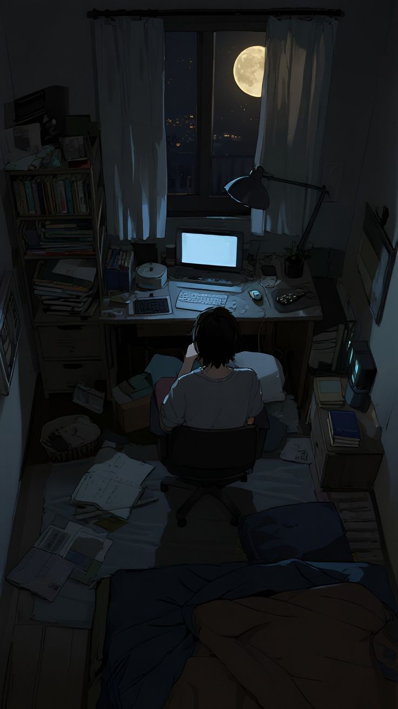
The day I met you and Christine, I noticed you were a decent, smartly dressed girl. At that point, my interest was still mostly curiosity.
From what Christine told me about you and how pleasant you were to be around, I began thinking about that. When we first met, I found you physically fine or normal, I didn’t get that initial physical attraction about you (idk perhaps I was mostly a bit nervous and didn't pay attention to anything else) however emotional interest towards you had started.
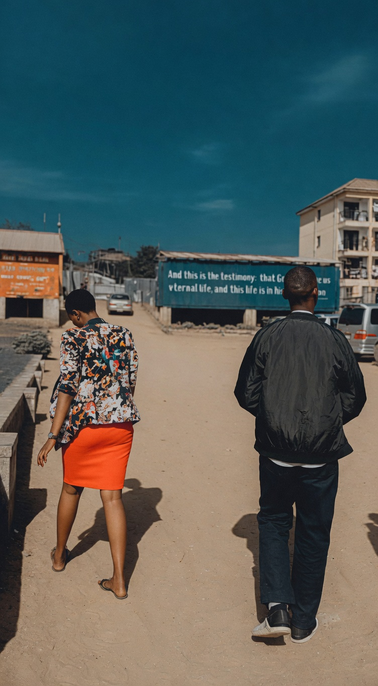
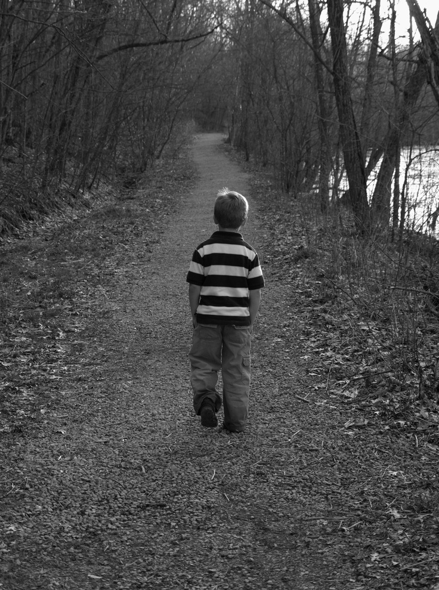
Over time, I slowly started getting fond of you. Back then I can say, it was more of mixed excitedness, curiosity and a bit of self pressure.
Those few walks with you, however simple they were,they felt significant to me as I started seeing who you are and I could see what Christine had told me about you being true ,you were a free person indeed ,I was getting more comfortable around you and also you were this person who I never expected to walk cause remember you had someone who always picked you up(boda guy),so leaving the boda and walking that long journey to where I boarded from made me see how considerate a person you are and also to some small extent it made me think ,maybe you too had had a subtle interest. So they became one of those few moments or memories I got to cherish a lot in my mind.
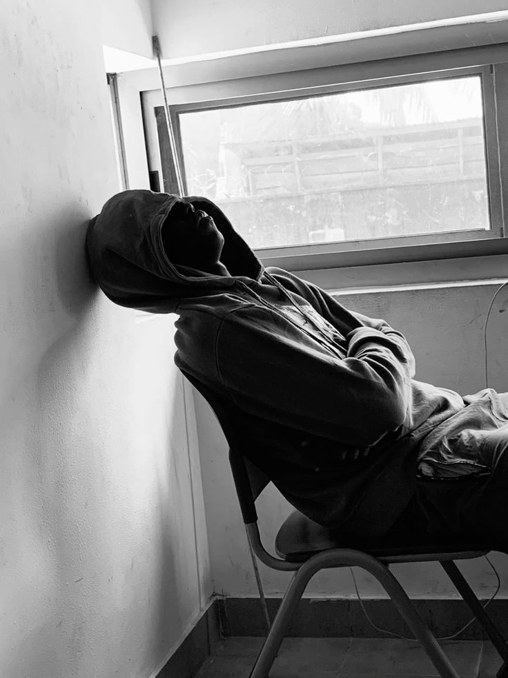
Those few interactions made you someone important to me. My mind began seeking validation. Whenever you told me to move on, it could hit me hard — It subconsciously felt like I was losing who you meant to me. That’s why I ended up writing long texts. I was trying to protect the meaning you had come to hold in my life.
Overtime,I was emotionally getting more into your ways. The more you told me to stop, or move on, is the more I felt you were rare. And what seemed as your defences made you very emotionally attractive to me. Whenever you refused to send me your pics, I saw that as self respect and I liked you the more. Whenever you said you weren't available, I perceived that as loyalty, which made me like you more. Whenever you said you leave things to GOD, I saw that as godliness, which made me like you even more. So I got more emotionally addicted to your ways.
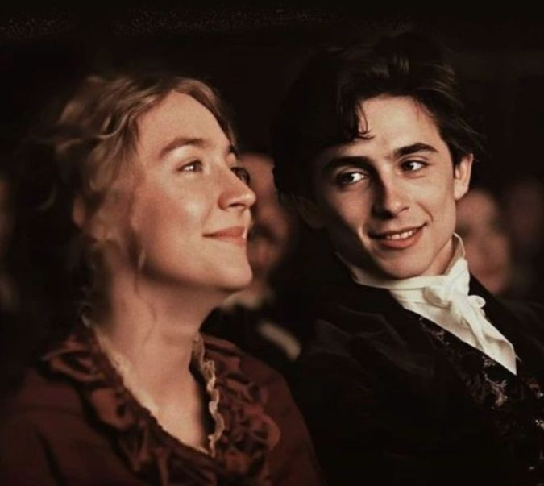
This developed much later — only after you had already become meaningful to me. When I looked at your pictures, I would smile. What once seemed just “fine or normal” had become truly beautiful in my eyes.
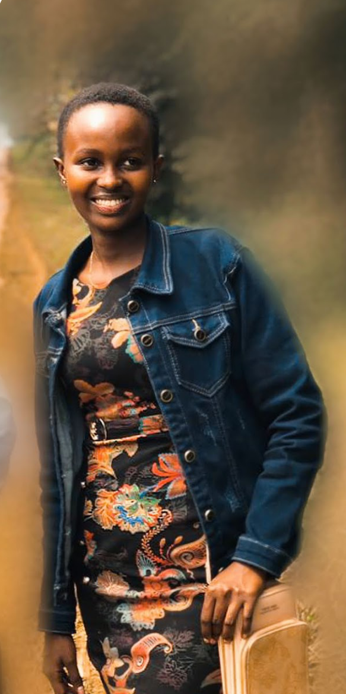
I didn't realize that this kept on distancing us gradually.
I think I unintentionally sent to you the wrong message or picture of who I am. I didn’t (and don't) like you because I'm demanding anything from you. I liked you for who you slowly became to me. I just didn't express it rightly.
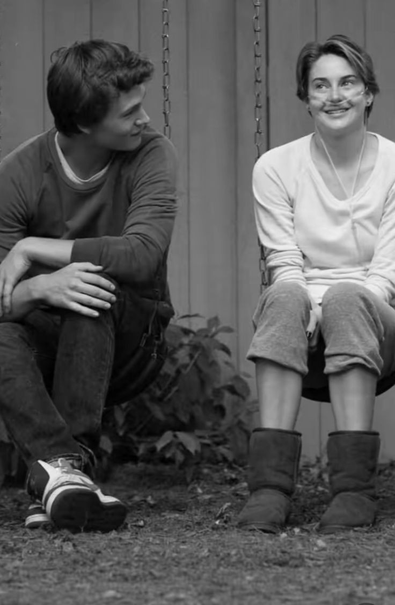
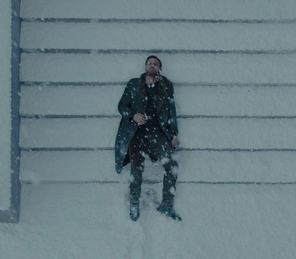
As time passed, I realized I wasn’t listening to you properly. Your presence in our chats started fading — messages left on delivered for days, sometimes on read, which wasn’t your earlier pattern. When you blocked me, I tried to reconnect right away with apologies on my other number, even though I felt you probably only needed space but I couldn’t stand the guilt like urge as you blocking me was something I least least expected from you ,so you doing it must have been really serious , so I urged to explain myself.After I tried to keep things platonic(on the other new number I used), but your low engagement continued. Eventually, I decided to stop, as uncomfortable as it was for me. I didn’t expect you to text me again on the other number(original). I had slowly been getting used to the distance, though not a day passed when I didn't have a thought about you(even if their intensity was starting to fade over time). When you texted again on the one you had blocked, I was pleasantly surprised and warmed up.
I believe the way i got to like you was one of the most mysterious ways one can say. I didn't have any intentions, but I gave deep meaning to even our smallest interactions. That’s probably why I came across as very annoying to you — to me, you were never just any girl. You had become so much more. This created a mismatch between us because the level at which I saw you wasn’t the same in your eyes that you saw me(something very normal).
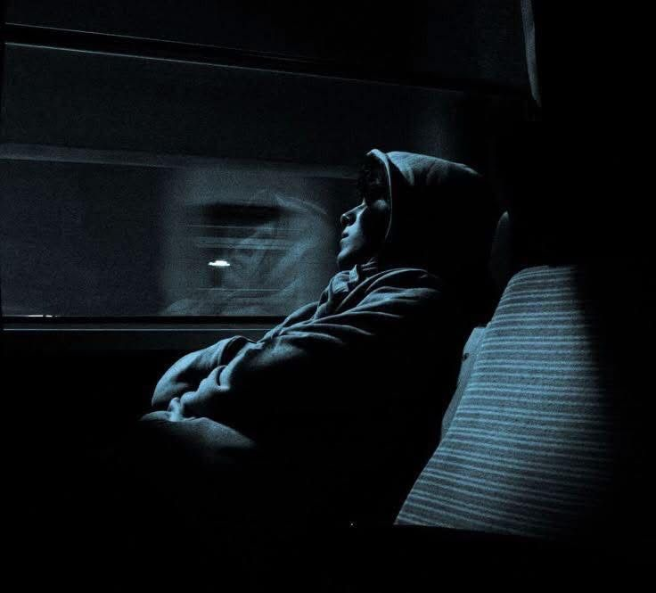
I could always text you, but behind the scenes it wasn’t easy for me—it was often a bit aching.As a way of expressing what I felt and thought,sometimes I wrote digital notes, edited things or videos, made songs etc(some you saw , many you didn't). I also desired and tried to understand you better. I knew you weren’t available, but that wasn’t really the issue for me. I was always okay with it. To me, you were someone I liked, cared about, saw differently in my eyes, respected, and was okay with who you had expressed yourself as to me. At the same time, some of your reactions—though they may have felt normal or natural to you—sometimes ached. There were moments I did things not to harm or annoy you, but you went suddenly berserk , and maybe you had your reasons. Still, my actions came from what you meant to me , most time wanting to be playfull or joking. I don’t remove the blame from myself. I can say I was somewhat blinded by how I saw you, and because of that, I didn’t always express myself in the best way. So I don’t place any blame on you.
This is one of your reactions that drained me most , I had only playfully put your picture on my dp ,it was only you who could see it ,it wasnt even fully showing
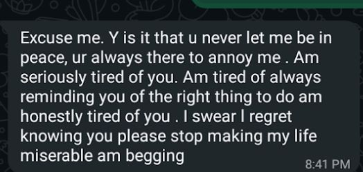
SOME OF THE STUFF I USED TO DO MOSTLY TO WRITE OR EXPRESS MY THOUGHTS AT THAT MOMENT
Please Pause The Background tune if you are to play these songs
Song called "Victoria my love"
song called "Rwandan Pearl"
A screenshot of some of the digital notes I used to take
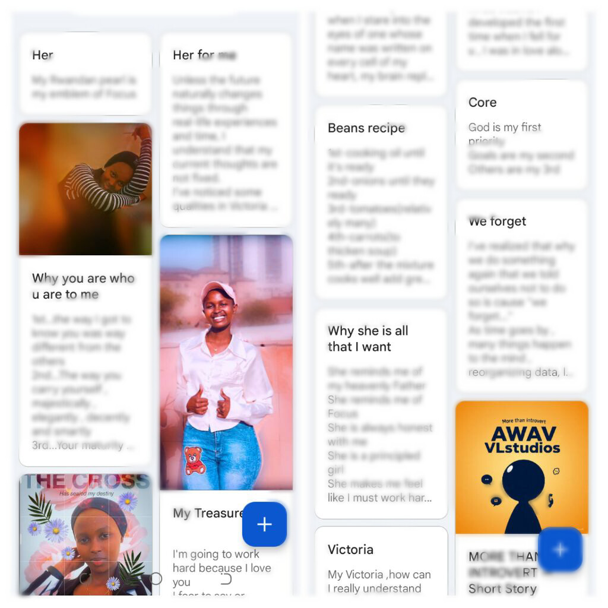
Simple writings
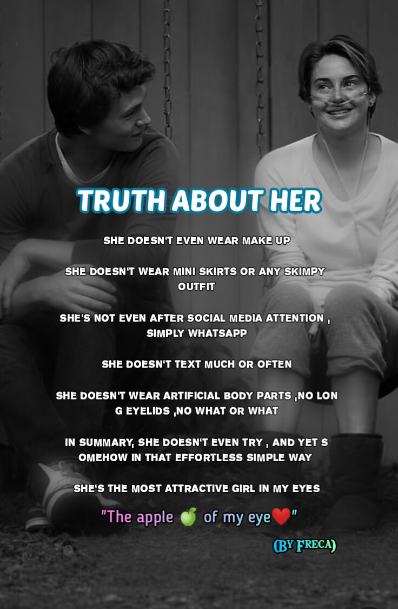
You can resume the background tune incase you're done playing those songs
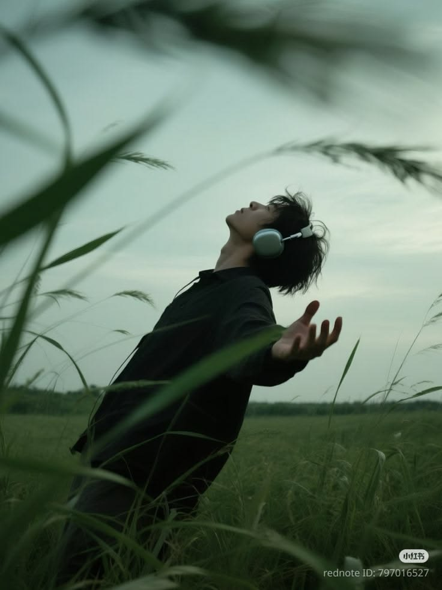
As of now, I can say I like you emotionally, and I may have used the wrong words before when I said “I love you.” What I really meant is that I admire you—your style the way you carry yourself. Your principles didn’t push me away; instead, they made you more attractive to me because they align with the kind of person I naturally can resonate with. I’m someone who values loyalty. When I care, I give my all, and I'm cautious about being broken or breaking someone so I would want someone I can trust and all that privacy and respect you had(and have)for your friends that you showed when I asked you for their numbers or your pics, this made you someone I can trust in my eyes. I prefer something meaningful rather than something short-term experimental stuff—someone who encourages me in my goals and reminds me of my Creator, because I don’t want to drift away from Him, and someone who understands and I can trust. Many things about you reflected these qualities. Forexample I remember the time I annoyed you( when you told me about that relationship situation back in P7). At first, you were really upset.. But later that same day, during that same walk, you smiled and laughed again as we talked. Something that amazed me,I realized you get mad when someone exceeds their limit but don’t hold onto it for long. Another thing about you that I liked, that understanding nature. So yes, I used the wrong phrase before that “I love you”—it was admiration. It would be unrealistic to call it love without shared experiences or a mutual connection. Right now, I can honestly say I like you emotionally, and I truly admire many things about you.
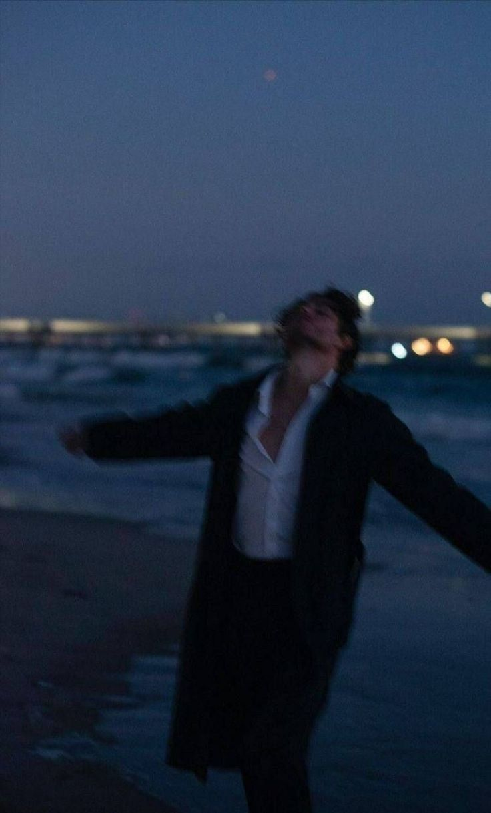
Even though all that happened but the truth is I myself I ain't ready or not in a position where I'd want a relationship, this is cause, as I said I dreamed of a meaningful connection, where I wanted to first be someone with a direction. I don't want a girl that I love to be my focus or center, to me that feels distractive and later boring. I want her to instead be a beautiful addition to my life, someone who won't replace GOD or my goals, but instead one who'll help me draw closer to Him and peacefully continue pursuing my goals and purpose, someone I can make memories with, later on even marry (if that's where it leads).
I noticed the silence and wanted a better way to communicate everything I needed you to know — one that wouldn’t feel overwhelming on WhatsApp. So I created this page.
The Compositor
Regards
With respect and an open heart,
Fredrick_M
May 2026